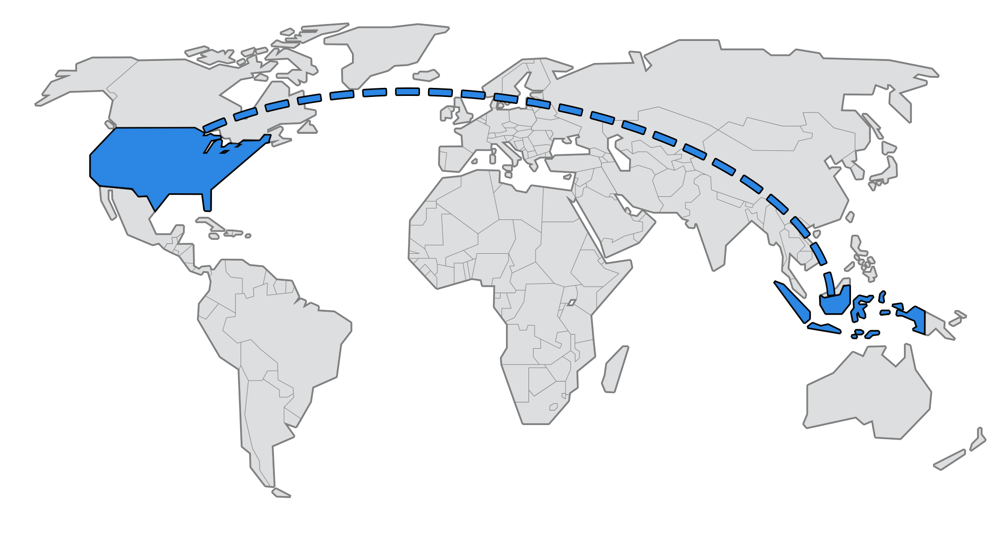

Jeremy Lesmana is a student at Temple City High School. He was born in Jakarta, Indonesia, where he lived until the age of 7. After that, he resided in Surabaya, Indonesia until moving to the United States at the age of 9. Jeremy did not come from a wealthy family; however this did not stop him from his ambitions. Jeremy fell in love with computers at a very young age, and began to take lessons on how to use and code on a computer. Although he took many courses, most of his knowledge comes from teaching himself. After coming to the States, Jeremy did not abandon his enjoyment of computers. He learned how to use many new softwares, such as Photoshop and Sony Vegas. Although he was not fluent in English, he also began teaching himself how to code in HTML and CSS. Jeremy began to adapt to American culture. His new pursuit is too attend college, and makes a difference in his community. At the age of fifteen, he is on the right path. -TM
